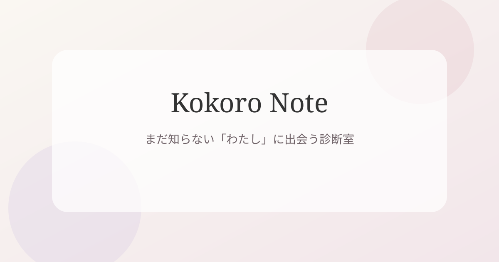

Free Shindan Magazine
まだ知らない「わたし」に出会う、やさしい診断室。
恋愛、性格、仕事、人間関係。気になるテーマから、今のあなたの気持ちやクセをそっと読み解いてみませんか？

Featured
人気の診断
気になるテーマを選んで、今のあなたに近い答えを探してみてください。
Categories
テーマから選ぶ
Editor's Pick
返信が遅いだけで、不安になってしまうあなたへ。
恋愛中の小さな不安は、誰にでもあるもの。まずは10問で、あなたの恋愛のクセをそっと見つめてみませんか？
About
Kokoro Noteについて
このサイトは、恋愛や性格、仕事、人間関係について、少しだけ自分を見つめるきっかけを届ける診断サイトです。
結果は正解や不正解を決めるものではありません。今の気持ちを整理したり、自分のクセに気づいたりするための小さなヒントとして楽しんでください。